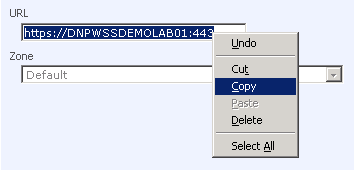
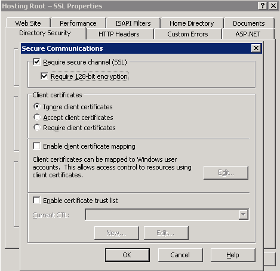

WSP Hosted SharePoint Solution Pre-Deployment Tasks
Translations:
Assumptions
This document assumes that background infrastructure (Windows Servers, Active Directory, WSS, DNS, etc) is configured correctly and error-free. At a minimum Windows event logs, Support tools utilities (such as dcdiag and netdiag) now show critical errors. At a maximum - all services deployed according Microsoft guides, carefully documented, there are no errors and warnings exist at all.
WSS 3.0 is deployed according to "server farm" scenario in Active Directory environment.
Examples in this article are for SSL protected SharePoint sites, used standard port (443). However it may be tuned to be not SSL protected and to non-standard port (such as 8080 or something). However we recommend to use only SSL protected SharePoint sites for security.
General ideas
WSP Hosted SharePoint service creates host-named Site Collections on the top of SharePoint Web Application (we call it "Root Web Application"). The method allows you to host thousands of SharePoint sites on single server.
You create Root Web Application manually and then tune Hosted SharePoint service to use it. You can use more than one Root Web Application and Hosted SharePoint service - for example SSL and not SSL, or with wildcard certificate or without it. Something similar to Exchange Storage Groups / Databases and different Hosted Exchange services connected to it. However in most cases it is completely enough to have one SSL-protected Root Web Application.
Creating root web application
On WSS front-end server you are going to manage with WSP open Administrative tools > SharePoint 3.0 Central Administration > Application Management > Create or Extend Web Application > Create a new Web application.
Non-default settings that you may choose (all those settings are not mandatory, you can choose another settings according to your vision).
- Description. Something meaningful. "Hosting Root - SSL" in our example
- Port. Any port you decide to use." 443" in our example (we are going to create SSL protected Web Application and use classic SSL port)
- Allow anonymous: Up to you. "Yes" in our example (it will not open anonymous access to all newly created Site Collections, but it will allow site owners to open anonymous access to their Site Collections if needed).
- Use Secure Sockets Layer (SSL). Up to you. "Yes" in our example (we suppose it will be used together with Hosted Exchange, so users will connect to SharePoint with e-mail/password combination the same as used to connect to Exchange mailboxes, so it should be secure).
- Application pool name. Up to you. "Hosting Root - SSL" in our example.
- Select a security account for this application pool. Up to you. "Predefined - Network Service" in our example. However you may decide to use separate account for security reasons.
- Select Windows SharePoint Services search server. The better to start and configure search before creating root Web Application and bind configured search server to it.
Default settings that should not be changed.
- Authentication provider. Use "NTLM"; otherwise you more likely will have problems with search.
- Also please do not change another default setting if you have no reason.
Finalizing root Web Application creation
- Write down root Web Application URL (or simple copy-paste it from it's field). It will be used later for WSP settings.

- Press "OK" and wait till Web Application creates.
- Run iisreset /noforce in command line.
Securing root Web Application with SSL certificate
This step is optional, but highly recommended.
- Go to IIS, root Web Application website and create certificate request. You can use any Common Name for this certificate because anyway your clients will create their Site Collections with different URLs that are not predictable. So they will get certificate- related errors/warnings in browsers anyway.
- Get SSL certificate from CA. You may use your internal CA here to save money. While Site Collections URLs are not predictable users will get certificate- related errors/warnings in browsers even you purchase certificate from VeriSign.
- Install certificate on root Web Application website.
- Restrict root Web Application website clients to use only SSL. Open website properties > Directory Security > Secure communications > Edit > Require secure channel (SSL), Require 128-bit encryption.

Note that there are some ways to avoid certificate- related errors/warnings in browsers.
First you can create root Web Application for every customer, but this is not the case because of WSS is extremely recourse-intensive application and you can not run a lot of Web Applications on one server.
Second you can purchase wildcard certificate (*.providerdomain.com) and have your customers to create Site Collections with URLs like client.providerdomain.com. However most of clients prefer to see et certificate- related errors/warnings in browsers and user URLs like team.client.com.
Disabling AD browsing at root Web Application level
Restrict people picked so users will not be able to resolve another organization's users with SharePoint.
Open command prompt, change directory to WSS BIN folder (C:\Program Files\Common Files\Microsoft Shared\Web Server Extensions\12\BIN by default) and run:
stsadm -o setproperty -pn peoplepicker-onlysearchwithinsitecollection -url https://wspwssdemolab01/ -pv yes
Where "-url" is root Web Application URL, you wrote down previously, "https://wspwssdemolab01/" in our example. Port number is omitted in this URL because it is standard for https. Please do not forget to enter port number in URL in case you use non-standard (not 80 or 443) port.
Check if property set correctly with "-o getproperty" stsadm swith. Here is an example:
stsadm -o getproperty -pn peoplepicker-onlysearchwithinsitecollection -url https://wspwssdemolab01/
You should get:
<Property Exist="Yes" Value="yes" />
Deploy Hosted Organizations module
In case it is already deployed (for example - for HES) - skip this step.
In case it is still not deployed - run steps described in this article. You can deploy this module either on the same computer as WSS server or another domain server that has WSP Server installed on it.